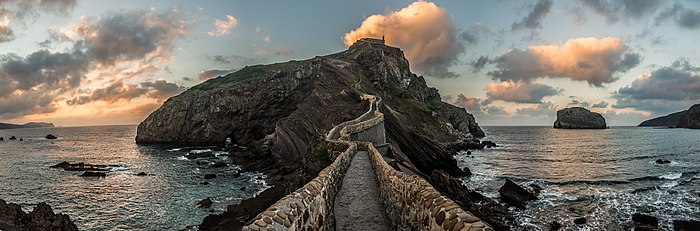

San Juan de Gaztelugatxe:
Gaztelugache (en euskera, Gaztelugatxe) es un islote de la localidad vizcaína de Bermeo, ​ País Vasco (España). Está unido al continente por un puente de dos arcos. Sobre la isla hay una ermita dedicada a San Juan que data del siglo X, aunque algunos descubrimientos datan del siglo IX. Junto con otra pequeña isla vecina, la de Aquech, forma un biotopo protegido, que se extiende desde la localidad de Baquio hasta el cabo Machichaco, en el golfo de Vizcaya.
El acceso se puede realizar desde la carretera que une Bermeo con Baquio (BI-3101). La mejor época para visitarlo es la primavera o el otoño y así disfrutar de la paz del lugar, ya que en verano suele estar muy concurrido.
Etimologia:
La palabra gaztelugatxe proviene del euskera gaztelu, "castillo" y atx, "peña", es decir, "peña del castillo". La palabra atx y sus variantes fonológicas son habitualmente usadas como sufijo o prefijo en euskera vizcaíno para denominar a montes y peñas: Aketx, Murgoatx, Karatxa, Atxulo, Axpe...
Documentalmente en el siglo XI (1053) la ermita se llamaba Sancti Johannis de Castiello (San Juan del Castillo), en la carta de donación que de ella hicieron Áñigo López, señor de Vizcaya, y su mujer Toda Ortiz a los monjes del Monasterio de San Juan de la Peña (Jaca, Huesca, Aragón), quedando bajo su protección y dominio, cuna de la Corona de Aragón.
«...ego Enneco Lopiz et uxor mea Tota Ortiz de nostra bona voluntate tibi domino Zianno Sancti Johannis monaco. Damus deo et Sancto Johanni pro animabus nostris in loco quod dicitur Sancti Johannis de Castiello id est in territorio de Bakio et afia parte de Bermeio ut posideant et habeant eum iIIi seniores Sancti Johannis cum tota sua hereditate».
En documentos posteriores, del año 1162, en castellano antiguo, la ermita aparece como Sanctus lohannes de Penna (San Juan de la Peña), en donación a la Orden Premonstratense por parte del conde López de Nájera y de Vizcaya.
Descripción:
La costa vizcaína en este lugar es agreste. El mar trabaja sin cesar erosionando la roca, areniscas y duras calizas de arrecife, y tallando en ella túneles, arcos y cuevas. La isla de Gaztelugacche es el corazón de este interesante tramo de costa, junto con la pequeña isla de los conejos, la isla de Aquech, paraíso de las aves marinas.
Sobre la isla de Gaztelugache hay una ermita consagrada a San Juan. Junto a la ermita hay un pequeño refugio que permite protegerse del viento y poder realizar una merienda disfrutando del mar y de las aves que anidan en estos lares.
El acceso es espectacular. Un estrecho camino que parte de tierra firme y cruza sobre las rocas por un puente de piedra permite llegar hasta la zona superior del islote después de ascender 241 escalones. El camino se encuentra asimismo jalonado con las sucesivas estaciones de un Viacrucis. Suele ser tradición entre los caminantes tocar la campana de la ermita, como símbolo por el esfuerzo realizado, una vez ascendidos los 241 escalones4​. El esfuerzo merece la pena.
El islote está atravesado por túneles y hay numerosos arcos. A sus lados se abren playas de piedra que suelen ser muy utilizadas por los buceadores.
La costa, acantilada, está cubierta de vegetación. Destaca en esta el endemismo vasco y el acebuche y sobre ellos hay árgomas, encinas y brezos. En el mar, de fondos rocosos, existen praderas de algas, con especies como las laminarias o saccorhizas. La población piscícola es la típica del Cantábrico, donde abundan lubinas, fanecas, congrios o chicharros, y se completa con babosas, carraspios, julias e invertebrados como actinias, erizos, holoturias, pulpos, nécoras y centollos, Además de los percebes que se encaraman en la roca.
Las aves marinas son muy abundantes. La existencia de espacios amplios, como la isla de Aqueche a la que solo se pueden acceder por mar, hacen que puedan reproducirse con tranquilidad. Entre las aves que crían aquí destaca, por su rareza y pequeño tamaño, el paíño común. Abundan Además, las gaviotas patiamarilla, los cormoranes moñudos y las palomas bravías.
La ermita:
La pequeña iglesia dedicada a la Degollación de San Juan, que permanece cerrada la mayor parte del tiempo, data del siglo X y algunos la consideran de origen templario, lo que es imposible, puesto que dicha orden no fue creada hasta 1119, y documentos anteriores a esta fecha acreditan su existencia. En 1053 fue donada, por Áñigo López, señor de Vizcaya, al monasterio de San Juan de la Peña situado cerca de Jaca en Huesca.
En 1593 sufrió un ataque corsario a manos de Francis Drake en el que fue saqueada. Este fue uno de los muchos incidentes que ha sufrido a lo largo de su historia, donde se ha incendiado varias veces. El último el 10 de noviembre de 1978 en el que resultó destruida. Dos años más tarde, el 25 de junio de 1980 se reinauguraba nuevamente.
En la explanada e interior de la ermita se han hallado enterramientos medievales del siglo IX y XII. La jurisdicción religiosa a la que pertenece la ermita es la de la parroquia de San Pelayo de Baquio.
La ermita alberga varios exvotos de marinos que se han salvado de algún naufragio. Según una tradición, una vez alcanzada la ermita hay que tocar la campana tres veces y pedir un deseo. El esfuerzo necesario para subir las escaleras, talladas en la roca, se ve ampliamente recompensado.
Episodios Bélicos;
El estratégico lugar que ocupa le hizo desarrollar un papel importante en diferentes acontecimientos históricos. Fue uno de los lugares en donde se enfrentaron el rey Alfonso XI de Castilla y el señor de Vizcaya Juan Núñez de Lara en 1334.
En 1594 fue atacado por herejes (hugonotes) de La Rochelle, sufriendo el saqueo y el asesinato del ermitaño que estaba a su cuidado. En el siglo XVIII fue asaltada por tropas inglesas y en la guerra civil española se produjo en sus aguas la batalla del Cabo Machichaco, en donde se enfrentó la marina republicana contra la sublevada.